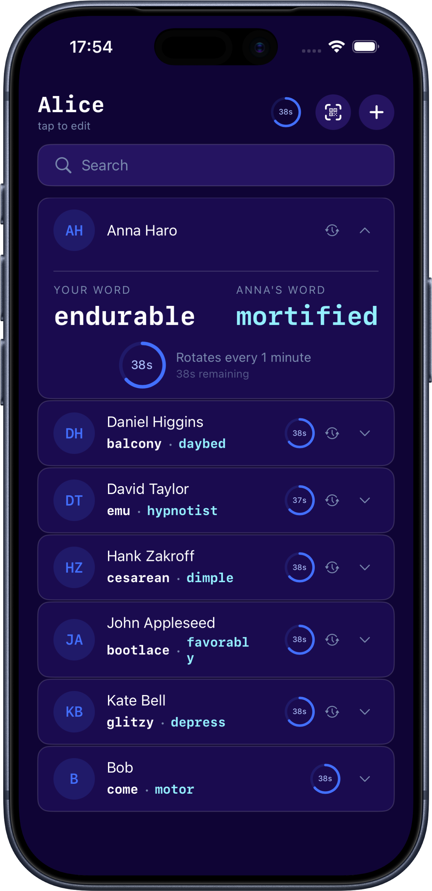
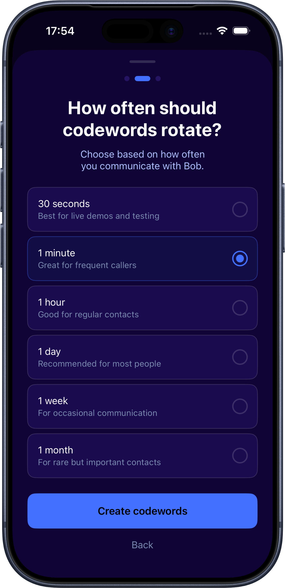
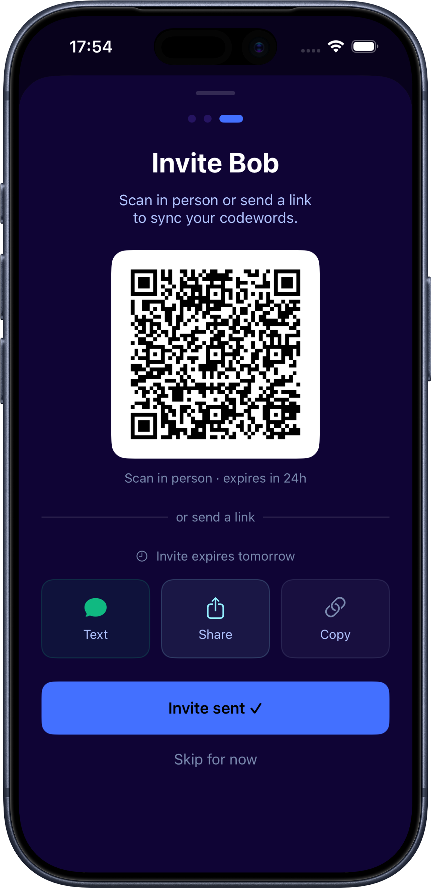
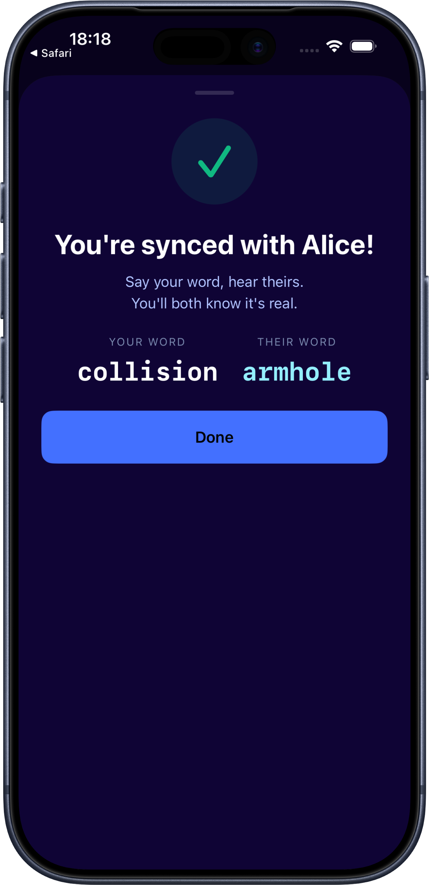

Improvised verification questions
"Prove it. What did we talk about last time?" Works right up until someone's scraped enough from your social media to answer it too.
The threat is already making headlines
You already have instincts for this. They don't hold up anymore.
"Prove it. What did we talk about last time?" Works right up until someone's scraped enough from your social media to answer it too.
An email or text from someone you actually know, and you still pause because you genuinely can't tell anymore.
Not a plan. Just a worry that gets louder every time a new deepfake story breaks.
Even if you already have a family codeword...
A codeword only works if ...
That's the whole idea behind realxreal.
Every trusted contact gets a secure rotating codeword pair. If they don't match, it's not them.

Set it up once. Stay synced forever.
Step 1
Every 30 seconds, every minute, every five — you decide how often your codeword pair refreshes. Faster rotation means a shorter window for anything to leak.

Step 2
Scan a QR code or send a link. That one moment sets up a shared cryptographic seed — nothing to configure after.

Step 3
Codewords keep rotating in sync on both devices without needing a live connection every time. Open the app days later and they still match.

Traditional MFA proves a device is yours. realxreal proves the person on the other end is who they claim to be.
Voice clones and video calls that sound and look exactly right.
Someone else's device now answers as "you."
A real login on a compromised or spoofed account across text, email, social, and chat apps.
When a call sounds exactly like your kid the codeword tells you in seconds if it's really them.
Stop wire fraud before it starts. Verify who's actually asking for that transfer, with no shared secret a scammer could research or guess.
Confirm a source is who they claim to be, even over an unfamiliar number or a cloned voice.
Anyone who wants a real answer to "is this actually them?"